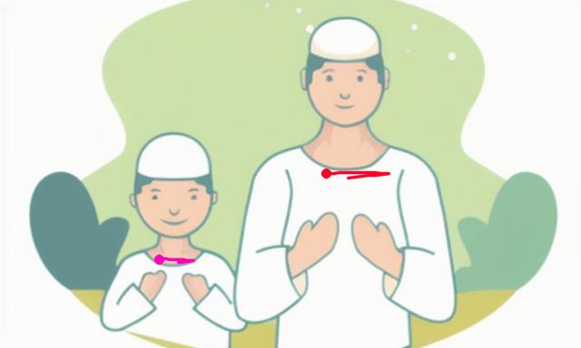
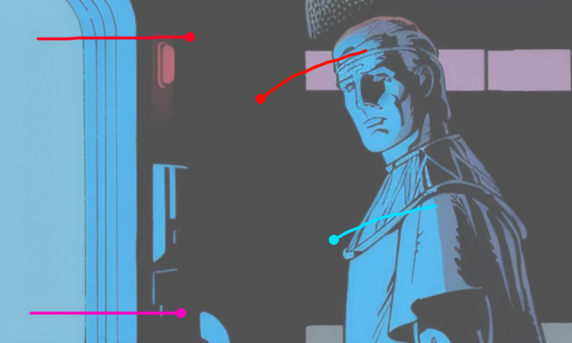

Trajectory-guided Anime Video Synthesis via Effective Motion Learning
Abstract
Cartoon and anime motion production is traditionally labor-intensive, requiring detailed animatics and extensive in-betweening from keyframes. To streamline this process, we propose a novel framework that synthesizes motion directly from a single colored keyframe, guided by user-provided trajectories. Addressing the limitations of prior methods, which struggle with anime due to reliance on optical flow estimators and models trained on natural videos, we introduce an efficient motion representation specifically adapted for anime, leveraging CoTracker to capture sparse frame-to-frame tracking effectively. To achieve our objective, we design a two-stage learning mechanism: the first stage predicts sparse motion from input frames and trajectories, generating a motion preview sequence via explicit warping; the second stage refines these previews into high-quality anime frames by fine-tuning ToonCrafter, an anime-specific video diffusion model. We train our framework on a novel animation video dataset comprising more than 500,000 clips. Experimental results demonstrate significant improvements in animating still frames, achieving better alignment with user-provided trajectories and more natural motion patterns while preserving anime stylization and visual quality. Our method also supports versatile applications, including motion manga generation and 2D vector graphic animations. The data and code will be released upon acceptance.
Method
We introduce an efficient sparse motion representation that records displacements on a sparse array of keypoints. Using a high-quality point-based tracker such as CoTracker, this representation effectively captures most frame-to-frame tracking and morphing profiles in anime. With this representation, we then develop our framework in two stages. In the first stage, we propose a video diffusion model to predict the motion representation directly from the conditions, including the input frame, user trajectories, and text prompts. To support training, we also propose a large-scale anime motion dataset with a novel motion sampling procedure to approximate user trajectories from CoTracker motion estimations. At the end of this stage, we warp the initial frame with the model predictions to construct the subsequent frames as a motion preview. Although this sequence may contain distortions and uncertainties, it still serves as an explicit motion prior for the next stage. Thus, in the second stage, we leverage the generative prior of an anime-specific video diffusion model, ToonCrafter, to refine the motion preview into a high-quality anime video clip. Specifically, we finetune the model to interpret motion guidance implicitly from the user-provided trajectories and explicitly from the warped motion preview. This approach enables the synthesis of complete anime frames with improved details, realistic and trajectory-conforming motion, and robust handling of occlusions.
Visual Comparison
| Input | Ours | MotionCtrl (Finetuned) |
DragNUWA (Finetuned) |
Motion-I2V (Finetuned) |
|---|---|---|---|---|
| A man in a red jacket holding a cell phone to his ear | ||||
| A person in a kitchen preparing food on a stove | ||||
| A cartoon character standing in front of a bunch of bottles | ||||
| A girl with a red bow on her head and a blue sky | ||||
| A cartoon character like a piece of paper | ||||
 |
||||
| A woman with a sword standing next to another woman | ||||
| The sun shines brightly through the branches of a tree | ||||
| A group of men riding on the backs of horses | ||||
| A cartoon character sitting at a table with a plate of food | ||||
| A white jellyfish floating on top of a blue ocean | ||||
|  | ||||
| A man and a boy standing in front of a green background | ||||
| Two women sitting at a table in a restaurant | ||||
| An anime character is throwing a baseball bat | ||||
|  | ||||
| A man in a blue suit is standing in front of a door | ||||
| Batman and the joker | ||||
| A cartoon of a woman holding a sword in front of a dragon | ||||
| A woman in a hat and dress walking along a field | ||||
| A woman with black hair and green eyes talking on a cell phone | ||||
| A sketch of a girl looking to the left. | ||||
| Comparison with vanilla competitor models | ||||
| Input | Ours | MotionCtrl (Vanilla) |
DragNUWA (Vanilla) |
Motion-I2V (Vanilla) |
| a young man holding a gun in the snow | ||||
| an anime scene with a sky full of stars | ||||
Ablation
| Input | Ours Full | W/o SAM | W/o traj pos embedding | Predicting Optical Flow in Stage 1 |
Predicting 4D Motion Volume (e.g., Generative Image Dynamics) in Stage 1 |
|---|---|---|---|---|---|
| A girl in a white shirt standing next to a ladder | |||||
| A cartoon character like a piece of paper | |||||
|
|||||
| A woman with a sword standing next to another woman | |||||
Unconditional Cases
| Input | Output | ||
|---|---|---|---|
| A girl in a white shirt and black hair | |||
| A person sitting on a star with a laptop | |||
| A drawing of a woman with long hair | |||